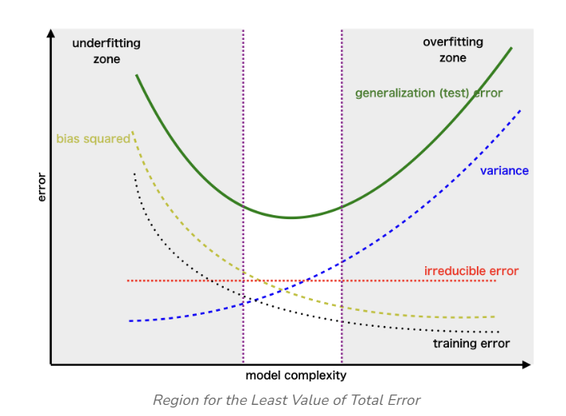

Bias-Variance Trade-Off#
Creator : Mahdieh Alizadeh
Email address: Mahdieh20201@gmail.com
Machine Learning 1403-fall
In machine learning, the bias-variance trade-off is a fundamental concept that describes the trade-off between the error introduced by the model’s assumptions (bias) and the error due to the model’s sensitivity to variations in the training data (variance). Understanding this trade-off helps in developing models that generalize well to unseen data.
The Mean Squared Error (MSE) can be decomposed into three components: bias, variance, and noise. The equation is: $\( \text{MSE} = \text{bias}^2 + \text{variance} + \text{noise} \)$
In this notebook, we will provide the mathematical proof for this equation and explain its components in detail.
Definitions#
Bias: The bias is known as the difference between the prediction of the values by the Machine Learning model and the correct value. Being high in biasing gives a large error in training as well as testing data. It recommended that an algorithm should always be low-biased to avoid the problem of underfitting. By high bias, the data predicted is in a straight line format, thus not fitting accurately in the data in the data set. Such fitting is known as the Underfitting of Data. This happens when the hypothesis is too simple or linear in nature. Refer to the graph given below for an example of such a situation.
Variance: the variability of model prediction for a given data point which tells us the spread of our data is called the variance of the model. The model with high variance has a very complex fit to the training data and thus is not able to fit accurately on the data which it hasn’t seen before. As a result, such models perform very well on training data but have high error rates on test data. When a model is high on variance, it is then said to as Overfitting of Data. Overfitting is fitting the training set accurately via complex curve and high order hypothesis but is not the solution as the error with unseen data is high. While training a data model variance should be kept low. The high variance data looks as follows.
Noise: Noise represents the irreducible error due to inherent randomness in the data. This is the error that cannot be reduced by any model.
underfit Underfitting occurs when a model is too simplistic to capture the underlying patterns in the data. You can identify underfitting by analyzing the model’s performance on both the training and test datasets
overfit Overfitting happens when a model is excessively complex, capturing not just the patterns but also the noise in the training data. Identifying overfitting is a bit more nuanced.
Bias (Underfitting) Region: On the left side of the curve, you have the region associated with high bias or underfitting. In this area, the model’s complexity is too low to capture the underlying patterns in the data. As a result, both the training and validation errors are high.
Variance (Overfitting) Region: On the right side of the curve, you enter the region associated with high variance or overfitting. Here, the model’s complexity is excessively high, and it starts fitting not only the underlying patterns but also the noise in the training data. In this region, the training error is very low, but the validation error starts to increase significantly because the model fails to generalize to unseen data.

Proof: MSE = Bias² + Variance + Noise#
Let’s assume we have a dataset \( D \) consisting of input-output pairs \( (x, y) \) where the true relationship is: $\( y = f(x) + \epsilon \)\( where \) \epsilon \( is the noise term with mean zero and variance \) \sigma^2 \(, i.e., \) \mathbb{E}[\epsilon] = 0 \( and \) \mathbb{E}[\epsilon^2] = \sigma^2 $.
We train a model \( \hat{f}(x) \) to approximate the true function \( f(x) \). We aim to calculate the \textbf{Mean Squared Error} (MSE) between the predicted value \( \hat{y} \) and the true value \( y \). The MSE is defined as:
Substitute \(y = f(x) + \epsilon\) into the MSE expression: $\( \text{MSE}(x) = \mathbb{E}\left[(f(x) + \epsilon - \hat{f}(x))^2\right] \)$
Now expand the square: $\( \text{MSE}(x) = \mathbb{E}\left[(f(x) - \hat{f}(x))^2 + 2(f(x) - \hat{f}(x))\epsilon + \epsilon^2\right] \)$
We can break this into three separate expectations: $\( \text{MSE}(x) = \mathbb{E}\left[(f(x) - \hat{f}(x))^2\right] + 2\mathbb{E}\left[(f(x) - \hat{f}(x))\epsilon\right] + \mathbb{E}[\epsilon^2] \)$
Step 1: Simplifying the second term#
Since \(\epsilon\) is independent of \(f(x)\) and \(\hat{f}(x)\), and \(\mathbb{E}[\epsilon] = 0\), the second term becomes zero: $\( 2\mathbb{E}\left[(f(x) - \hat{f}(x))\epsilon\right] = 0 \)$
Step 2: Simplifying the third term#
We know that \(\mathbb{E}[\epsilon^2] = \sigma^2\), which is the variance of the noise term. So, the MSE now reduces to: $\( \text{MSE}(x) = \mathbb{E}\left[(f(x) - \hat{f}(x))^2\right] + \sigma^2 \)$
Step 3: Decomposing the first term#
Now, we decompose the term \(\mathbb{E}\left[(f(x) - \hat{f}(x))^2\right]\). To do this, add and subtract the expected prediction \(\mathbb{E}[\hat{f}(x)]\) inside the square: $\( \mathbb{E}\left[(f(x) - \hat{f}(x))^2\right] = \mathbb{E}\left[\left(f(x) - \mathbb{E}[\hat{f}(x)] + \mathbb{E}[\hat{f}(x)] - \hat{f}(x)\right)^2\right] \)$
Now expand the square: $\( \mathbb{E}\left[(f(x) - \hat{f}(x))^2\right] = \mathbb{E}\left[\left(f(x) - \mathbb{E}[\hat{f}(x)]\right)^2\right] + \mathbb{E}\left[\left(\mathbb{E}[\hat{f}(x)] - \hat{f}(x)\right)^2\right] + 2\mathbb{E}\left[\left(f(x) - \mathbb{E}[\hat{f}(x)]\right)\left(\mathbb{E}[\hat{f}(x)] - \hat{f}(x)\right)\right] \)$
Step 4: Simplifying cross-term#
Since \(\mathbb{E}[\hat{f}(x)]\) is the expected value of the model predictions, it is independent of the fluctuations of \(\hat{f}(x)\) around its mean, making the cross-term vanish: $\( \mathbb{E}\left[\left(f(x) - \mathbb{E}[\hat{f}(x)]\right)\left(\mathbb{E}[\hat{f}(x)] - \hat{f}(x)\right)\right] = 0 \)$
Step 5: Defining bias and variance#
Now we are left with two terms:
The first term, \(\left(f(x) - \mathbb{E}[\hat{f}(x)]\right)^2\), is the bias squared: $\( \text{Bias}^2 = \left(f(x) - \mathbb{E}[\hat{f}(x)]\right)^2 \)$
The second term, \(\mathbb{E}\left[\left(\mathbb{E}[\hat{f}(x)] - \hat{f}(x)\right)^2\right]\), is the variance of the model’s predictions: $\( \text{Variance} = \mathbb{E}\left[\left(\mathbb{E}[\hat{f}(x)] - \hat{f}(x)\right)^2\right] \)$
Final MSE Expression#
Thus, the Mean Squared Error can be written as: $\( \text{MSE}(x) = \text{Bias}^2 + \text{Variance} + \sigma^2 \)$
This proves that the Mean Squared Error (MSE) can be decomposed into three components:
Bias²: The error due to the model’s assumptions,
Variance: The error due to the model’s sensitivity to different training sets,
Noise: The irreducible error due to random noise in the data.
# estimate the bias and variance for a regression model
from pandas import read_csv
from sklearn.model_selection import train_test_split
from sklearn.linear_model import LinearRegression
from mlxtend.evaluate import bias_variance_decomp
# load dataset
url = 'https://raw.githubusercontent.com/jbrownlee/Datasets/master/housing.csv'
dataframe = read_csv(url, header=None)
# separate into inputs and outputs
data = dataframe.values
X, y = data[:, :-1], data[:, -1]
# split the data
X_train, X_test, y_train, y_test = train_test_split(X, y, test_size=0.33, random_state=1)
# define the model
model = LinearRegression()
# estimate bias and variance
mse, bias, var = bias_variance_decomp(model, X_train, y_train, X_test, y_test, loss='mse', num_rounds=200, random_seed=1)
# summarize results
print('MSE: %.3f' % mse)
print('Bias^2: %.3f' % bias)
print('Variance: %.3f' % var)
---------------------------------------------------------------------------
ModuleNotFoundError Traceback (most recent call last)
Cell In[1], line 5
3 from sklearn.model_selection import train_test_split
4 from sklearn.linear_model import LinearRegression
----> 5 from mlxtend.evaluate import bias_variance_decomp
6 # load dataset
7 url = 'https://raw.githubusercontent.com/jbrownlee/Datasets/master/housing.csv'
ModuleNotFoundError: No module named 'mlxtend'
I will demonstrate the generalization error and test error in Nadaraya-Watson kernel regression, highlighting the regions where overfitting may occur
import numpy as np
import matplotlib.pyplot as plt
from sklearn.metrics import mean_squared_error
from scipy.spatial.distance import cdist
from sklearn.model_selection import train_test_split
class NadarayaWatsonKernelRegression:
def __init__(self, kernel='gaussian', bandwidth=1.0):
self.kernel = kernel
self.bandwidth = bandwidth
def _kernel_function(self, distances):
"""Gaussian Kernel function."""
return np.exp(-0.5 * (distances / self.bandwidth) ** 2)
def fit(self, X_train, y_train):
"""Fit the model with training data."""
self.X_train = X_train
self.y_train = y_train
def predict(self, X_test):
"""Predict the target values for the test data."""
distances = cdist(X_test, self.X_train, 'euclidean') # Compute pairwise distances
weights = self._kernel_function(distances) # Apply kernel
weights_sum = np.sum(weights, axis=1, keepdims=True) # Normalize weights
weights /= weights_sum
return np.dot(weights, self.y_train) # Weighted sum of target values
# Generate training data
np.random.seed(1234)
data_x = np.linspace(10, 25, 70)
data_y = np.sin(data_x) + 1e-1 * np.random.randn(70) # Add slight noise
# Split the data into train and test sets
X_train, X_test, y_train, y_test = train_test_split(data_x, data_y, test_size=0.3, random_state=42)
X_train = X_train.reshape(-1, 1)
X_test = X_test.reshape(-1, 1)
# List of bandwidths to evaluate
bandwidths = np.linspace(.4, 0.01, 100)
train_errors = []
test_errors = []
# Loop over different bandwidths
for bandwidth in bandwidths:
nwkr = NadarayaWatsonKernelRegression(kernel='gaussian', bandwidth=bandwidth)
nwkr.fit(X_train, y_train)
# Calculate training error
y_train_pred = nwkr.predict(X_train)
train_error = mean_squared_error(y_train, y_train_pred)
train_errors.append(train_error)
# Calculate test error
y_test_pred = nwkr.predict(X_test)
test_error = mean_squared_error(y_test, y_test_pred)
test_errors.append(test_error)
# Plot train and test errors
plt.figure(figsize=(10, 6))
plt.plot(bandwidths, train_errors, label='Train Error', color='red', linewidth=2)
plt.plot(bandwidths, test_errors, label='Test Error', color='blue', linewidth=2)
# Labels and title
plt.xlabel('Bandwidth')
plt.ylabel('Mean Squared Error')
plt.title('Train vs. Test Error (Nadaraya-Watson Kernel Regression)')
plt.legend()
plt.grid(True)
plt.xlim(.15,.4)
plt.gca().invert_xaxis()
plt.show()
Let me explain the importance of selecting the optimal bandwidth in Nadaraya-Watson kernel regression. Choosing an inappropriate bandwidth can lead to two issues: if the bandwidth is too large, the model will underfit, capturing only broad trends and missing important details in the data. On the other hand, if the bandwidth is too small, the model will overfit, fitting to the noise and fluctuations in the training data rather than generalizing to unseen data
import numpy as np
from scipy.spatial.distance import cdist
import matplotlib.pyplot as plt
class NadarayaWatsonKernelRegression:
def __init__(self, kernel='gaussian', bandwidth=1.0):
self.kernel = kernel
self.bandwidth = bandwidth
def _kernel_function(self, distances):
"""Kernel function, default is Gaussian."""
if self.kernel == 'gaussian':
return np.exp(-0.5 * (distances / self.bandwidth) ** 2)
else:
raise ValueError(f"Unsupported kernel: {self.kernel}")
def fit(self, X_train, y_train):
"""Fit the model with training data."""
self.X_train = X_train
self.y_train = y_train
def predict(self, X_test):
"""Predict the target values for the test data."""
# Compute pairwise distances between test and training points
distances = cdist(X_test, self.X_train, 'euclidean')
# Apply kernel function
weights = self._kernel_function(distances)
# Normalize weights
weights_sum = np.sum(weights, axis=1, keepdims=True)
weights /= weights_sum
# Weighted sum of the target values
return np.dot(weights, self.y_train)
# Generate new training data
X_train = np.linspace(10, 20, 50)
y_train = np.sin(X_train)+ 1e-0*np.random.rand(50)
# Reshape X_train to be compatible with the Nadaraya-Watson code (n, d)
X_train = X_train.reshape(-1, 1)
h_values = np.linspace(0.01, 0.7, 10) # Define h values
fig, axes = plt.subplots(nrows=5, ncols=2, figsize=(12, 20)) # 5 rows and 2 columns
# Flatten the axes array for easier iteration
axes = axes.flatten()
# Initialize and fit the model with the new training data
for idx, h in enumerate(h_values):
nwkr = NadarayaWatsonKernelRegression(kernel='gaussian', bandwidth=h)
nwkr.fit(X_train, y_train)
# Predict the values
y_pred = nwkr.predict(X_train)
# Plot on the current subplot
axes[idx].scatter(X_train, y_train, color='red', label='Training Data', zorder=3)
axes[idx].plot(X_train, y_pred, color='blue', label='NW Prediction', zorder=2)
axes[idx].set_title(f'Bandwidth h = {h:.2f}')
axes[idx].set_xlabel('X')
axes[idx].set_ylabel('sin(X)')
axes[idx].legend()
axes[idx].grid(True)
# Adjust layout so plots don't overlap
plt.tight_layout()
plt.show()
References#
Geman, S., Bienenstock, E., & Doursat, R. (1992). Neural networks and the bias/variance dilemma. Neural Computation, 4(1), 1-58. DOI: 10.1162/neco.1992.4.1.1